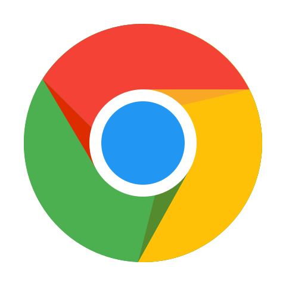
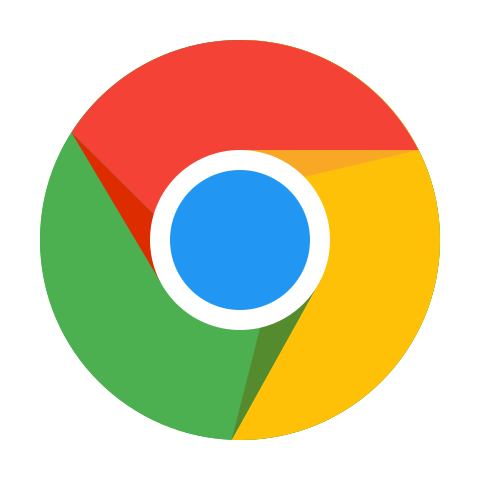

Brief
Everyday scrolling on long pages can be a tiring experience specially on those sites which provides infinite scrolling (like facebook, twitter, etc). You will keep scrolling using your mouse to see more and more updates and then when you want to go up to the top of the page, you might move your hand from your mouse to keyboard to search for Home key or you will drag the scroll bar to the top.
Scroll To Top tries to minimizie this effort by providing an intutive icon at the bottom-right corner of each page so that with one click you will be at the top of the page with beautiful animation. No more searching for Home key on your keyboard and no more dragging of the scroll bar. It will be just fun and ergonomic to use it.
What is Scroll To Top?
Scroll To Top is a browser extension available for all major browsers. You can install it for your favorite browser with just one click. It adds an image at the bottom-right corner of your browser screen in case the page is scrollable. Of course you can configure the location of the icon. You can customize almost all aspects of this extension and yeah also it provides lots of features to make scrolling interesting, just go to settings page anytime. I've worked really hard to make it simple, safe, and 100% free.
Checkout release notes for what's new.
Downloads
| Download for your favorite browser |
 

|
Scroll To Top is an open source project hosted on GitHub.